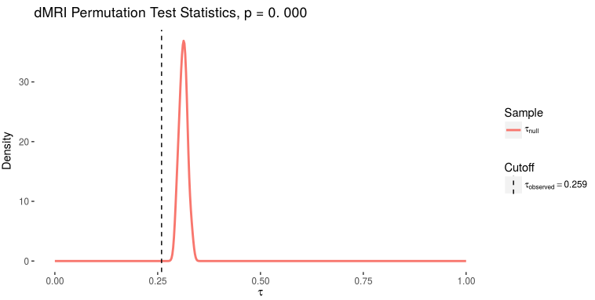
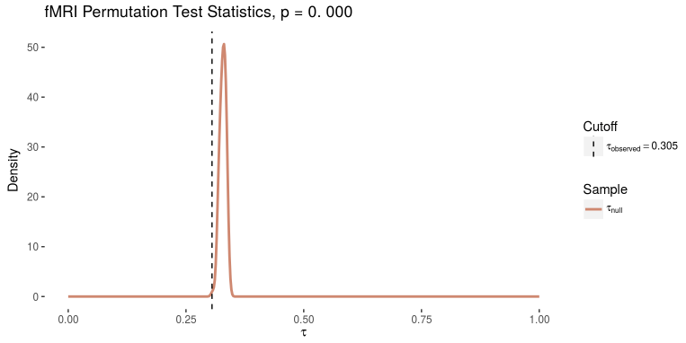
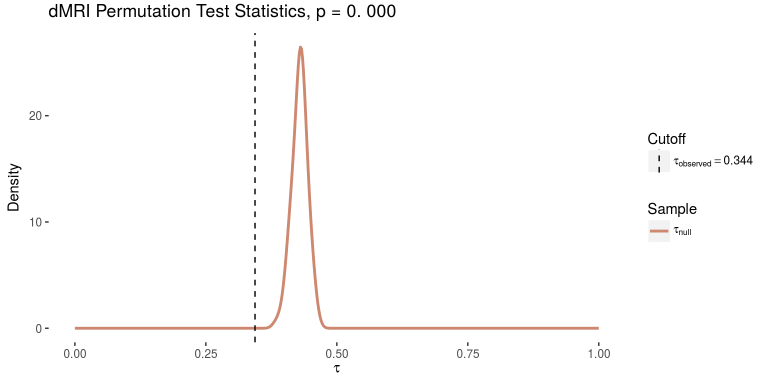
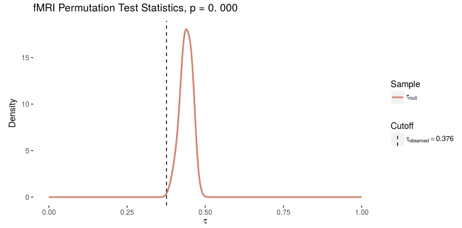
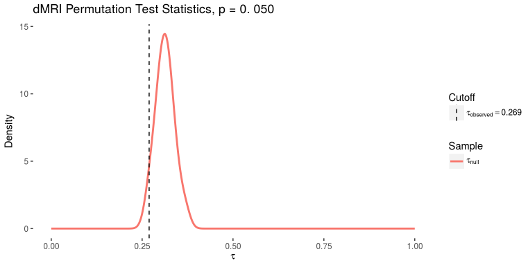
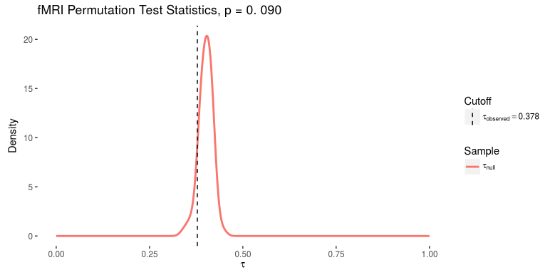

Data
- Given: $n$ samples of data-tuples, $\{(g_i, y_i, z_i)\}_{i=1}^{n_1}$, $\{(g_i, y_i, z_i)\}_{i=1}^{n_2}$, $n_1 + n_2 = n$
- $g_i$ is a graph $(E, V, w)$ where $w(v_i, v_j) = w_{ij}$ with adjacency-matrix $A^{(i)}$
- a set of effects $y_i$ that we anticipate will be signal
- a set of effects $z_i$ that we anticipate will be noise due to batch effects
Task
- Characterize the composition of signal to batch-effect present
Signal Subgraph Model
- Estimate a probability matrix $P_{y_i}$ for each possible signal class $y_i$
- Determine the edge set $\mathcal{S} = \{(u, v) \in E(G)\}$ that capture the greatest class difference between the $y_i$s
$$L_{A_y}(A, y, \theta) = \prod_{(u, v) \in \mathcal{S}}Bern\left(a_{uv}; p_{uv}\right)\pi_y\prod_{(u, v) \notin \mathcal{S}}Bern\left(a_{uv}; p_{uv}\right)$$
Classification
- Classify depending on the most-likely class based on the likelihood model
- $$\hat{h}(A, \tau_n) = \textrm{argmax}_{y \in Y}\prod_{(u, v) \in \mathcal{S}}Bern\left(a_{uv}; \hat{p}_{uv | y}\right)\hat{\pi}_y$$
Batch Detection
- Pool the data and estimate a ssg based on all of the data, $\mathcal{S}_{global}$
- For each $z_i \in Z$, estimate a local ssg over each $z_i$, $\mathcal{S}_{z_i}$
- Test statistic is $\tau = \frac{1}{|Z|} \sum_{i=1}^{|Z|} jaccard(\mathcal{S}_{z_i}, \mathcal{S}_{global})$
- How similar is the globally estimated ssg to each locally estimated ssg?
Permutation approach for $p$-value
- Pool all of the data, ignoring $z_j$ labels, but retaining $y_i$ labels.
- for each set $z_j \in Z$, randomly select with replacement $n_{y_i}^j$ examples of class $y_i$, where $n_{y_i}^j$ are the number of $y_i$ in the original partition $z_j$.
- Compute the ssg and test statistic appropriately over all $z_j$ for a given permutation iteration.
Does there exist some sort of batch effect in MRI?
Tried with consistent demographics, and non-consistent demographics, as well as with same scanning site repeated multiple times
dMRI, no demographic consideration set
Consider sample with all dMRI studies included

fMRI, no demographic consideration set
consider sample with all fMRI studies included

dMRI, same demographic set
consider dMRI studies with fraction male $.5 \pm .03$ and taken in china (BNU1, BNU3, HNU1, SWU4)

fMRI, same demographic set
consider fMRI studies where fraction male $.5 \pm .03$ and taken in china (BNU1, BNU3, HNU1, SWU4)

dMRI, same site
consider 2 dMRI studies with samples taken at same site (BNU1 and BNU3)

fMRI, same site
consider 2 fMRI studies with samples taken at same site (BNU1 and BNU3)

Next Week
- Consider different possible demographic issues
Cases 1
- Within a study with TRT, partition into 2 sets of sessions, the first session and second session
- Is there a batch effect between sessions of a particular study?
- ie, BNU1, session1 v session 2
Cases 2
- Within a study, partition into 2 sets of subjects, the first half of subjects and second half of subjects
- Is there a batch effect between subjects in a particular study?
- ie, first half of BNU1 vs second half of BNU1.
Cases 3
- Take 2 out-of-sample studies at same site. Sets are study 1 at site $\alpha$, and study 2 at site $\alpha$.
- Is there a batch effect between studies with site held fixed?
- ie, BNU1 and BNU3, both taken at Beijing Normal with same demographics.
Cases 4
- Take 2 studies with same demographics. Sets are study 1 at site $\alpha$ with demographics $d_1$, and study 2 at site $\beta$ with demographics $d_1$.
- Is there a batch effect between sites with demographic held fixed?
- ie, BNU1 and HNU1 both have same demographics (race and age and sex).
Cases 5
- Take 2 studies with not same demographics. Sets are study 1 at site $\alpha$ with demographics $d_1$, and study 2 at site $\beta$ with demographics $d_2$, $d_1 \neq d_2$.
- Is there a batch effect between sites with demographic not the same?
- ie, BNU1 (Beijing Normal University) v. UWM (University of Wisconsin-Madison) taken on different continents, and different races of subjects.
Presentation of Results
- Plot 1: As we vary $|\mathcal{S}|$, what is the impact on 2-fold cross-validated error between set 1 and set 2?
- Plot 2: As we vary $|\mathcal{S}|$, what is the impact on the test statistic $\tau_{obserrved}$?
- Plot 3: As we vary $|\mathcal{S}|$, what is the impact on the $p$-value of the test statistic using the synthetic-permutation approach described?
- How well can we train a logistic regression classifier on the site to identify sex, and how does this compare with chance?